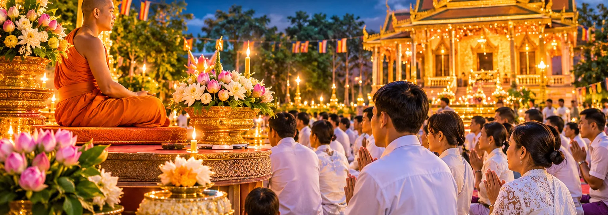
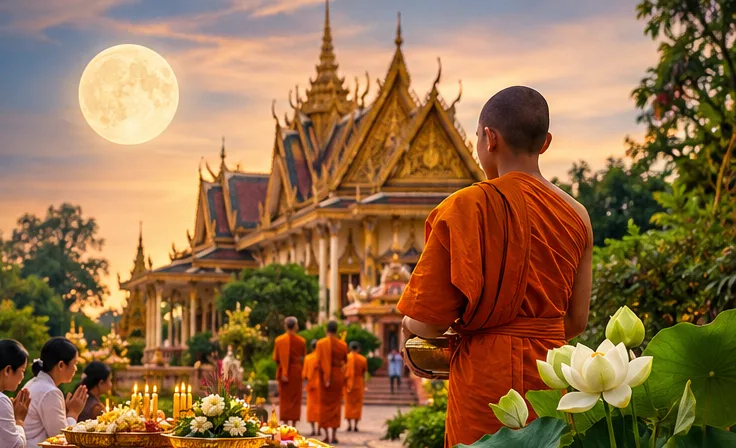

Khmer Culture & Calendar
Cambodian Buddhist Holy Days
A guide to Thngai Sil, full-moon observances and Buddhist festivals throughout the year
Four days in every lunar month are Thngai Sil, Buddhist holy days kept at pagodas across Cambodia. A few full moons a year are major festivals. This guide explains both, month by month, and shows how to find the exact dates.
Buddhism in everyday Cambodian life
Theravada Buddhism runs through Cambodian life: the pagoda (wat) is a place of worship, a community hall and, for many families, the place where children first learn to read. The rhythm of the year follows the lunar calendar, and so does the rhythm of the month.
That monthly rhythm is Thngai Sil, literally "precept day". On these days many Buddhists visit the pagoda, offer food to the monks, listen to a Dharma talk, meditate and keep the Five Precepts, and some keep the Eight Precepts. Not every family observes every holy day, and customs differ between pagodas and regions, but almost every Cambodian knows when a Sil day falls.
What is Thngai Sil?
Thngai Sil follows the Khmer lunar calendar, not the Gregorian one, so the dates move every year. A lunar month has a waxing half (koeut) and a waning half (roach). The holy days are the 8th waxing day, the full moon (15th waxing day), the 8th waning day and the last waning day (the 14th or 15th, the new moon).
The custom goes back to the uposatha, the observance days of early Buddhism. On full-moon and new-moon days monks gather to recite their monastic rules, and lay people take the precepts as a support for practice (Access to Insight). How many of the four days a family keeps, and how strictly, is a personal and local choice.
The four holy days of a lunar month
- 88th waxing dayQuarter moon
- 15Full moon15th waxing day
- 88th waning dayQuarter moon
- 14/15Last waning dayNew moon
Four kinds of day — not the same thing
- Regular holy days
Thngai Sil: the four lunar days above, every month of the year.
- Full-moon observances
Every full moon is a Sil day and usually the best attended. Most are ordinary holy days.
- Major Buddhist festivals
A few particular full moons (Meak, Visak, Asalha) and the seasons of Vassa and Pchum Ben.
- Public holidays
Set each year by the government. Some are Buddhist (Visak Bochea, Pchum Ben); others are royal or cultural (Royal Ploughing, Water Festival, Khmer New Year).
Month by month
Lunar months do not line up with Gregorian months, so the same festival can fall in different months in different years. Each card shows which lunar full moons can fall in that month, the holy days and the festivals that can land there, with this year's and next year's dates.
January
Full moon of Boss or Meak
Thngai Sil: about 4 days (sometimes 5)
- Meak BocheaLunar date · variesCan fall 28 January – 26 FebruaryNot in this month in 2026 or 2027
February
Full moon of Meak or Phalkun
Thngai Sil: about 4 days (sometimes 5)
- Meak BocheaLunar date · variesCan fall 28 January – 26 February2 February 2026 · 21 February 2027
March
Full moon of Phalkun or Chet
Thngai Sil: about 4 days (sometimes 5)
No major Buddhist festival — regular holy days only.
April
Full moon of Chet or Pisak
Thngai Sil: about 4 days (sometimes 5)
- Visak BocheaLunar date · variesCan fall 25 April – 24 MayNot in this month in 2026 or 2027
- Khmer New Year (13–14 April, solar)
May
Full moon of Pisak or Jesth
Thngai Sil: about 4 days (sometimes 5)
- Visak BocheaLunar date · variesCan fall 25 April – 24 May1 May 2026 · 20 May 2027
June
Full moon of Jesth or Asadh
Thngai Sil: about 4 days (sometimes 5)
No major Buddhist festival — regular holy days only.
July
Full moon of Asadh
Thngai Sil: about 4 days (sometimes 5)
- Asalha BocheaLunar date · variesCan fall 5 July – 3 August29 July 2026 · 18 July 2027
- Chol VassaLunar date · variesCan fall 6 July – 4 August30 July 2026 · 19 July 2027
August
Full moon of Asadh or Srap
Thngai Sil: about 4 days (sometimes 5)
- Asalha BocheaLunar date · variesCan fall 5 July – 3 AugustNot in this month in 2026 or 2027
- Chol VassaLunar date · variesCan fall 6 July – 4 AugustNot in this month in 2026 or 2027
September
Full moon of Srap or Phatrabot
Thngai Sil: about 4 days (sometimes 5)
- Kan Ben beginsLunar date · variesCan fall 3 September – 2 October27 September 2026 · 16 September 2027
- Pchum BenLunar date · variesCan fall 17 September – 16 October30 September 2027
October
Full moon of Phatrabot or Assoch or Kadeuk
Thngai Sil: about 4 days (sometimes 5)
- Pchum BenLunar date · variesCan fall 17 September – 16 October11 October 2026
- Chenh VassaLunar date · variesCan fall 2 October – 31 October26 October 2026 · 15 October 2027
November
Full moon of Kadeuk or Migasir
Thngai Sil: about 4 days (sometimes 5)
- Kathin season endsLunar date · variesCan fall 31 October – 29 November24 November 2026 · 13 November 2027
- Water Festival (Kadeuk full moon; cultural)
December
Full moon of Migasir or Boss
Thngai Sil: about 4 days (sometimes 5)
No major Buddhist festival — regular holy days only.
Major Cambodian Buddhist festivals
These are the special days of the Buddhist year. All follow the lunar calendar, so the Gregorian date changes every year; the range shows the earliest and latest dates between 2000 and 2040.
Meak Bochea
Remembers the day 1,250 enlightened monks gathered before the Buddha without being called, and he gave them the Ovada Patimokkha, a short summary of the teaching: avoid evil, do good, purify the mind.
- When
- Full moon of Meak, the 3rd lunar month.
2026: 2 February 2026 · 2027: 21 February 2027
Range 2000–2040: 28 January – 26 February · Date changes every year - What people do
- Morning offerings to the monks, a Dharma talk, and in the evening a candle procession, walking three times around the vihara with candles, incense and flowers.
- Public holiday 2026
- No (not on the 2026 list).
Visak Bochea
The most important day of the Buddhist year: it remembers the Buddha's birth, his enlightenment and his passing away, which tradition places on the same full-moon day.
- When
- Full moon of Pisak, the 6th lunar month.
2026: 1 May 2026 · 2027: 20 May 2027
Range 2000–2040: 25 April – 24 May · Date changes every year - What people do
- Merit-making at the pagoda, keeping the precepts, Dharma talks and an evening candle procession around the vihara.
- Public holiday 2026
- Yes (1 May 2026, the same day as Labour Day).
Asalha Bochea
Remembers the Buddha's first sermon to five ascetics. One of them, Kondañña, understood it and became the first monk, so the Buddha, his teaching and the community of monks were complete.
- When
- Full moon of Asadh, the 8th lunar month (the 2nd Asadh in years with a leap month).
2026: 29 July 2026 · 2027: 18 July 2027
Range 2000–2040: 5 July – 3 August · Date changes every year - What people do
- Offerings and a Dharma talk at the pagoda; it is also the eve of the rains retreat.
- Public holiday 2026
- No.
Chol Vassa (Buddhist Lent begins)
Monks begin the three-month rains retreat and stay at one monastery for the season.
- When
- 1st waning day of Asadh, the day after Asalha Bochea.
2026: 30 July 2026 · 2027: 19 July 2027
Range 2000–2040: 6 July – 4 August · Date changes every year - What people do
- Young men are ordained before the retreat; families offer large Vassa candles and rain-bathing cloths. Read our Chol Vassa guide.
- Public holiday 2026
- No.
Pchum Ben
Cambodia's festival for the dead: 15 days at the end of Phatrabot when merit is dedicated to parents, grandparents and all ancestors. Tradition holds that spirits of the dead, some of them suffering, return to seek food and merit from their relatives.
- When
- The first 14 waning days of Phatrabot are Kan Ben, when families take turns bringing food to the pagoda; the 15th (last waning day) is Pchum Ben day.
2026: 27 September 2026 – 11 October 2026 · 2027: 16 September 2027 – 30 September 2027
Range 2000–2040: 17 September – 16 October · Date changes every year - What people do
- Food offerings to the monks in the names of the dead, and before dawn rice balls (bay ben) offered around the vihara. Families travel home, so cities empty.
- Public holiday 2026
- Yes (10–12 October 2026).
Chenh Vassa and the Kathin season
The rains retreat ends; in the month that follows, communities offer new robes and gifts to the monks in the Kathin ceremony (Kathin Teann).
- When
- Chenh Vassa is the full moon of Assoch; the Kathin season runs until the full moon of Kadeuk.
2026: 26 October 2026 – 24 November 2026 · 2027: 15 October 2027 – 13 November 2027
Range 2000–2040: 2 October – 31 October · Date changes every year - What people do
- Kathin processions with music, robes and gifts. Each pagoda can receive the Kathin offering once a season, so groups often travel to a pagoda in their home village.
- Public holiday 2026
- No.
Related days that are not Buddhist holy days
- Khmer New YearSolar date: 13 or 14 April, for three or four days.
A national, cultural New Year with Buddhist customs: visiting the pagoda, building sand stupas and bathing Buddha statues and elders. Public holiday (14–16 April 2026).
- Royal Ploughing Ceremony4th waning day of Pisak, four days after Visak Bochea.
A royal agricultural rite that forecasts the harvest. Public holiday (5 May 2026).
- Water Festival (Bon Om Touk)The full moon of Kadeuk and the days around it.
A royal and cultural festival of boat races, illuminated floats and saluting the moon; it falls on the last day of the Kathin season. Public holiday (23–25 November 2026).
What people do on Thngai Sil

- Visit the pagoda — often early in the morning, many people dressed in white.
- Offer food to the monks — rice, dishes and fruit, given before midday.
- Listen to a Dharma talk — and join the chanting led by the monks.
- Meditate — alone or with the community, at the pagoda or at home.
- Keep the precepts — the Five Precepts: no killing, no stealing, no sexual misconduct, no lying, no intoxicants. Some keep the Eight, adding no food after midday, no entertainment or adornment, and no luxurious beds.
- Give and help — donations to the pagoda and help for people in need.
- Reflect — a quieter day: many avoid parties and alcohol.
Customs vary: some families keep every holy day, others only the full moon or the big festivals, and practice differs between pagodas and regions.
How to find the dates for this year
Thngai Sil and the festivals are worked out from the Khmer lunar calendar. Our Khmer Lunar Calendar shows every holy day and festival for any month, calculated with the traditional rules. Pagodas occasionally announce a different day, so check with your local pagoda for ceremonies.
Next holy days
Frequently Asked Questions
What does Thngai Sil mean in Cambodia?
Thngai means day and sil means the Buddhist precepts, so Thngai Sil is a precept day: a lunar holy day for visiting the pagoda, making offerings and keeping the precepts.
How many Thngai Sil days are there in a lunar month?
Four: the 8th waxing day, the full moon, the 8th waning day and the last waning day (new moon). A Gregorian month usually contains four, sometimes five.
Is every full-moon day a Buddhist holy day?
Every full moon is a Thngai Sil day, and the best attended one each month. Only some full moons are major festivals, such as Meak, Visak and Asalha Bochea.
Do Thngai Sil dates change every year?
Yes. They follow the lunar calendar, so the Gregorian dates move each year, and years with a leap month shift the summer and autumn dates by about three weeks.
What do Cambodian Buddhists do on a holy day?
Many visit the pagoda, offer food to the monks, listen to a Dharma talk, meditate and keep the Five or Eight Precepts. Customs differ between families and pagodas.
What is the difference between Thngai Sil and Meak Bochea?
Thngai Sil comes four times every lunar month. Meak Bochea is one particular full moon, in the month of Meak, that remembers the gathering of 1,250 monks before the Buddha; it is also a Sil day, but with special ceremonies.
How can I find Cambodian Buddhist holy days for this year?
Open our Khmer Lunar Calendar: it marks every Thngai Sil day and festival for any month. For ceremonies, confirm with your local pagoda.
Can people observe Thngai Sil while living outside Cambodia?
Yes. Khmer pagodas abroad follow the same lunar days, and anyone can keep the precepts, meditate or make offerings at home. The lunar date is the same; the Gregorian date can differ by a day across time zones.
In short
Thngai Sil gives the Cambodian month a steady rhythm of generosity, reflection and community, and the great festivals mark the Buddhist year. Use the Khmer Lunar Calendar to plan the next holy day, and share this guide with family and friends.
For cultural interest. Practices differ between families, pagodas and regions; follow the guidance of your own pagoda.
Sources
- Uposatha days and the meaning of Magha, Visakha and Asalha Puja: Access to Insight, “Uposatha Observance Days”.
- 2026 public holidays (Sub-Decree No. 167): Andersen Cambodia, “Cambodia Sets Official 2026 Public Holiday Schedule”.
- All lunar dates: traditional Khmer calendar rules in the open-source momentkh library.